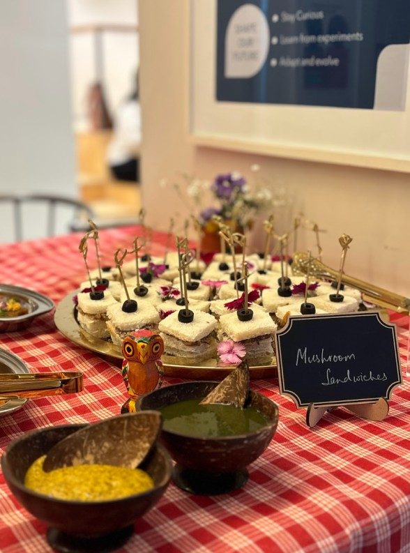
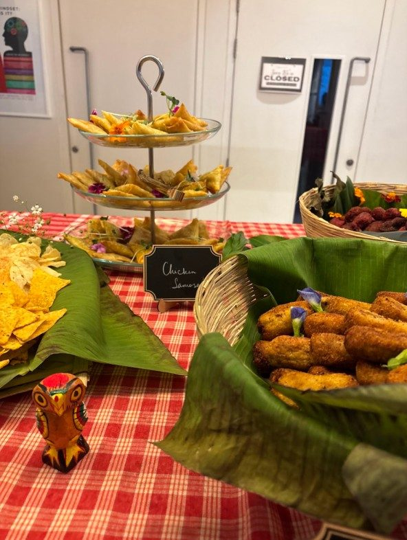
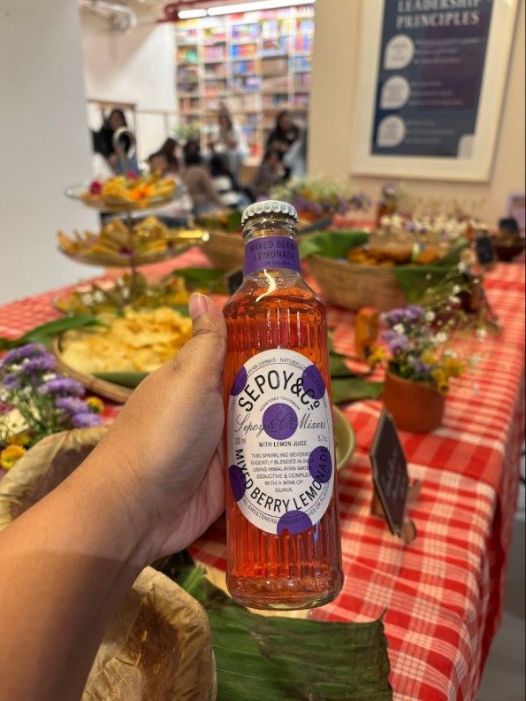
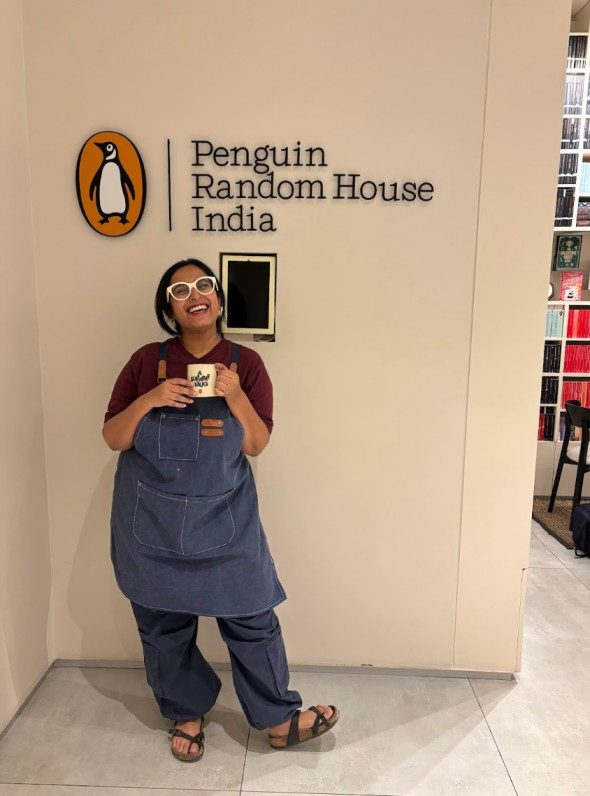
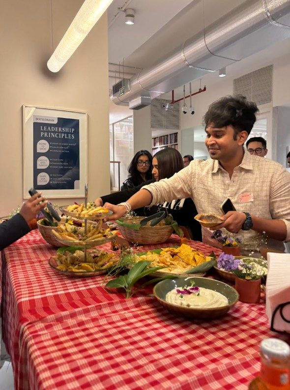
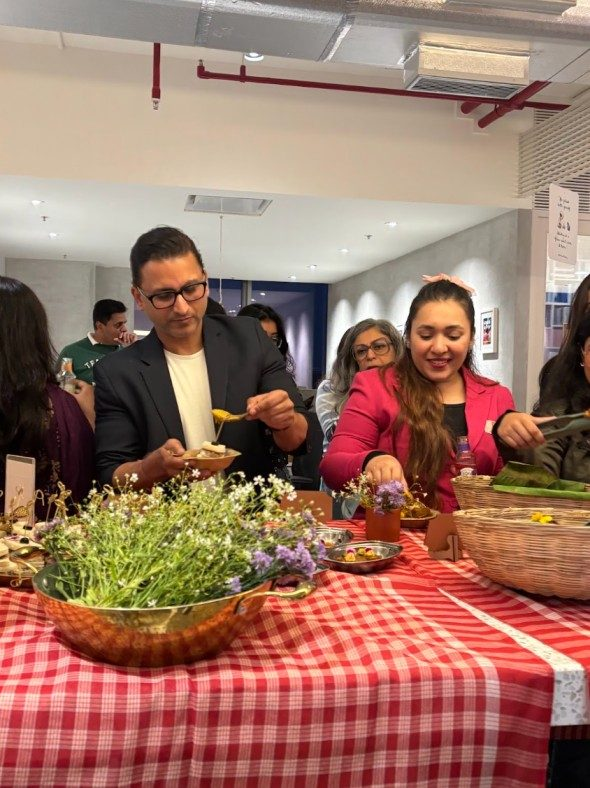

Toontooni's Table × Penguin Random House India
A Full-Circle Moment: Curating a Grazing Table for Penguin Random House India

There is a rare kind of magic in returning to where you started, carrying something you've built from the ground up.
Toontooni's Table was invited to the offices of my first employer, Penguin Random House India, to curate a grazing table experience for their Gurgaon book club meet. Walking through those doors not as an employee, but as a founder and storyteller through food, felt nothing less than surreal.
Moving Beyond "Chai-Samosa" Corporate Catering
For a room full of readers and thinkers, we wanted to move away from the traditional office snacks or "chai-samosa" format. We designed a vibrant, immersive grazing table to create an experience that would pique curiosity and spark conversations.
The Menu: A Fusion of Story and Flavour
Our menu comprised cauliflower hummus, classic Bengali chops, mushroom sandwiches, dhokha cake, and more. Sepoy & Co. was our beverage partner at the event and their lovely drinks provided the perfect crisp balance to our savoury spread.
Storytelling Through Food
Toontooni's Table was built on the idea that every meal should tell a story. Bringing that philosophy back to the place where I first learned the art of storytelling was an unforgettable experience. Whether it's an intimate book club or a corporate event in Gurgaon, we aim to bring people together through curated culinary journeys.
Moments from the Event




